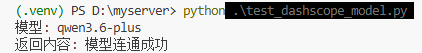

AI 联调阶段
AI 分析打通
目标
让监控数据不只是被取出来，而是能进一步被 AI 总结成可读的状态判断、风险点和建议动作。
1. 模型连通测试
在接入正式分析逻辑前，项目先通过 test_dashscope_model.py 验证 DashScope 兼容接口是否可访问、模型是否能稳定返回文本。
python .\test_dashscope_model.py
2. 分析脚本设计
在 zabbix_step2_ai.py 中，项目先构建设备摘要，再把摘要文本提交给 AI。早期版本主要关注前一天事件日志、CPU、内存和可用性，后续逐步过渡到更完整的最近 24 小时监控项分析。
python .\zabbix_step2_ai.py3. 输出策略
这一阶段就已经开始约束 AI 输出格式，避免生成过长或偏离运维场景的文本。核心目标是让 AI 输出更接近值班同事能直接使用的结论，而不是泛泛的描述。
4. 阶段成果
完成这一阶段后，项目已经从“能取数”升级为“能生成设备分析结论”。这也是后续接入钉钉推送和完整自动化脚本的关键前提。
本阶段成果
AI 接口已联通，设备监控数据能够被整理并输出为可读的状态判断、风险点和建议动作。